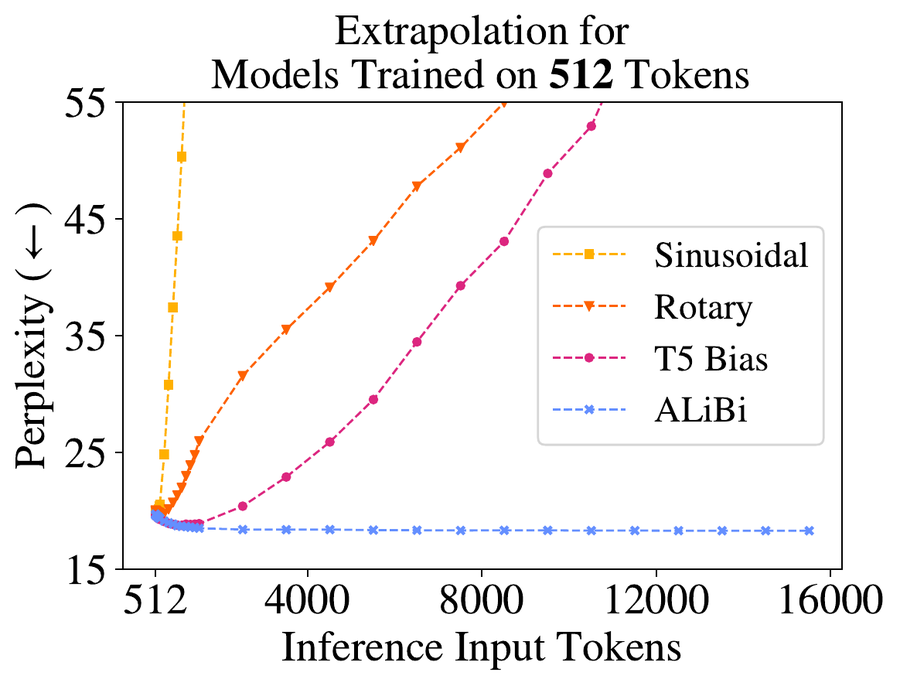

On this page
Attention alone ignores word order and lets every token see every other token. Positional encodings tell attention where each token sits, and masks block token pairs that must not attend. Positions are added once at the input or, for RoPE and ALiBi, in every attention layer; masks apply on every forward pass, in training and generation. Each token (a word or word piece) enters attention as a vector, its embedding. Attention runs in several side-by-side copies called heads.
Nothing in the attention line looks at where a token sits. "Dog bites man" and "man bites dog" look the same to the model.
This checks that attention ignores order; five tokens go in once in order and once shuffled, and the last line prints True.
import torch
def attention(Q, K, V):
S = Q @ K.T / Q.size(-1) ** 0.5
return S.softmax(dim=-1) @ V
n, d = 5, 16
X = torch.randn(n, d) # no positions added
out = attention(X, X, X)
perm = torch.randperm(n)
Xs = X[perm]
out_shuf = attention(Xs, Xs, Xs)
same = torch.allclose(out[perm], out_shuf, atol=1e-6)
print(same) # TrueThe original Transformer (Vaswani et al., 2017) adds a fixed position vector to each token's embedding before the first layer, built from sine and cosine waves of different speeds, one pair per pair of dimensions:
The sinusoidal encoding in NumPy for 8 positions and 16 dimensions; one row per position comes out.
import numpy as np
BASE = 10000
def positional_encoding(n, d):
pos = np.arange(n)[:, None] # (n, 1)
j = np.arange(d)[None, :] # (1, d)
i = j // 2 # dims 2i and 2i+1 share i
angle = pos / BASE ** (2 * i / d)
even = j % 2 == 0
return np.where(even, np.sin(angle), np.cos(angle))
pe = positional_encoding(8, 16)
print(pe.shape) # (8, 16)Cosine similarity measures how alike two vectors point, 1 for the same direction and 0 for perpendicular.
Two methods, RoPE (rotary position embedding) and ALiBi (attention with linear biases), leave the embeddings alone and act inside attention at every layer, so a score can depend on how far apart two tokens are instead of where each one sits.
RoPE (Su et al., 2021) turns each query and key by an angle set by its position, so "not" two words before "good" scores the same at position 5 or 500.
Figure 4. Moving both arrows keeps the angle, so the score, the same.
Query at position 4, key at 6, gap 2.
ALiBi (Press et al., 2021) adds no position vectors; it subtracts from each score, before the softmax, a penalty that grows linearly with distance, so it costs almost nothing.
Every positional encoding faces one test: inputs longer than any seen in training. A learned position table has one trainable vector per position. The Transformer paper found it as good as the sinusoidal encoding and kept the sinusoidal one because it "may allow the model to extrapolate" to longer sequences.
In a learned PyTorch table, position ids go in, one learned row per position comes out, and the last call fails.
import torch
import torch.nn as nn
MAX_LEN, d = 512, 64
table = nn.Embedding(MAX_LEN, d) # one row per position
ids = torch.arange(MAX_LEN)
print(table(ids).shape) # torch.Size([512, 64])
table(torch.arange(2000)) # IndexError, no row past 511The GPT-style model on The Transformer Block uses such a table, so its longest input is fixed when it is built.
The ALiBi paper trained a 16-layer language model on WikiText-103 (about 103M tokens of Wikipedia) with 512-token inputs and measured perplexity, how surprised it is by the real next token, on longer inputs, against sine, RoPE and T5's bias (a learned score bias per distance bucket). ALiBi stays below its 512-token score past 12,000 tokens.

Padding and the future are two reasons to block a pair, and both add a mask matrix M to the scores before the softmax.
Short sequences in a batch are filled out to the same length with padding tokens. Real tokens must not attend to them, so the padding keys are masked; a padding query is harmless, since its output is left out of the loss (Section 5.3).
The padding mask in PyTorch for two sequences, 5 and 3 tokens long; scores go in and weights with 0 on every padded key come out.
import torch
B, h, T = 2, 8, 5 # batch, heads, padded length
lengths = torch.tensor([5, 3])
keep = torch.arange(T) < lengths[:, None] # (B, T)
S = torch.randn(B, h, T, T)
blocked = ~keep[:, None, None, :] # (B, 1, 1, T)
S = S.masked_fill(blocked, float("-inf"))
A = S.softmax(dim=-1) # padded keys get weight 0
print(A[1, 0])Masking keys only still leaves a real key in every row. Masking padded queries too gives rows that are all negative infinity; there the softmax divides 0 by 0 and writes NaN ("not a number"), which spreads through training.
A decoder, which writes left to right, must not see later tokens. The causal mask blocks every key after the query: zeros on and below the diagonal, negative infinity above it.
The snippet builds that matrix for 5 tokens; look at triu, which keeps negative infinity only above the diagonal.
import torch
T = 5
NEG_INF = float("-inf")
M = torch.full((T, T), NEG_INF).triu(diagonal=1)
print(M) # 0 on and below the diagonal, -inf aboveBecause no row can see its future, training grades all T next-token predictions in one pass (drawn on The Transformer Block).
Figure 9. Play writes the sentence one word at a time; each row reads only its own word and the words before it, as generation does.
| k1 | k2 | k3 | k4 | k5 | |
|---|---|---|---|---|---|
| q1 | |||||
| q2 | |||||
| q3 | |||||
| q4 | |||||
| q5 |
Figure 10. Both masks add negative infinity to blocked scores.
Loss masking keeps padded positions out of the loss; you set their targets to -100, the ignore_index that F.cross_entropy skips by default.
import torch
import torch.nn.functional as F
B, T, VOCAB = 2, 5, 100
IGNORE = -100
logits = torch.randn(B, T, VOCAB)
targets = torch.tensor([[4, 8, 15, 16, 23], [42, 7, 9, IGNORE, IGNORE]])
pred = logits.flatten(0, 1) # (B*T, VOCAB)
target = targets.flatten() # (B*T,)
loss = F.cross_entropy(pred, target, ignore_index=IGNORE)
print(loss) # mean over the 8 real targetsAttention masks choose which tokens each token reads; loss masks choose which predictions count.
In From BLIP to the Q-Former, three different masks let one set of weights train on three objectives at once.
RoPE as Hugging Face's Llama code writes it, then a causal call; shape (B, h, T, dk) goes in and comes out.
import torch
import torch.nn.functional as F
B, h, T, d_k, BASE = 1, 8, 16, 64, 10000.0
inv_freq = BASE ** -(torch.arange(0, d_k, 2) / d_k)
angles = torch.arange(T)[:, None] * inv_freq # (T, d_k/2)
emb = torch.cat((angles, angles), dim=-1) # (T, d_k)
cos, sin = emb.cos(), emb.sin()
def rotate_half(x):
x1, x2 = x.chunk(2, dim=-1)
return torch.cat((-x2, x1), dim=-1)
q, k, v = torch.randn(3, B, h, T, d_k)
q = q * cos + rotate_half(q) * sin
k = k * cos + rotate_half(k) * sin
out = F.scaled_dot_product_attention(q, k, v, is_causal=True)| Sine and cosine | Added once to the token embeddings at the bottom of the stack, every forward pass; nothing learned. |
|---|---|
| Learned table | Same place, one learned row per position, 512 rows here. |
| RoPE | Every attention layer, rotates q and k before the scores; no weights. |
| ALiBi | Every attention layer, a fixed bias added to the scores; no weights. |
| Masks | Causal mask built once per sequence length, padding mask once per batch; added in every attention layer. |
| Loss masking | Every training step, inside the loss only. |
| RoPE base | Sets pair p's turn per position, base−2(p−1)/d. Larger turns every pair after the first slower, so far tokens stay apart; smaller turns faster and wraps sooner. Infinite, every pair but the first stops turning, so only one fast pair carries position and it repeats every 2π positions; 1, every pair turns alike, one radian per position. Default 10000, the same constant that sets the slowest wave of the sinusoidal encoding in Section 2; rope_theta in Hugging Face. |
| ALiBi slope ma | Multiplies the distance i − j. Steeper makes head a look near, gentler lets it reach far; 0 ignores order, very steep sees only the neighbour. Fixed at 2−8a/h, 1/2 to 1/256 for 8 heads. |
| Code | modeling_llama.py (Hugging Face), F. (PyTorch docs). |
is_causal=True plus an attn_mask raises an error; merge them into one mask.is_causal aligns the triangle top left and shows only the first key; pass False.How do attention, positions and masks stack into a full model? The Transformer Block.